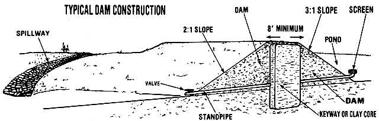

Wildlife biologist Dan Russell tells you how to construct, stock and manage . . .
A fishpond (some folks call such bodies of water farm ponds, but I say that you don't have to live on a farm to construct your own fishin' hole) can provide many hours of pleasant recreation, enhance the beauty of (and variety of wildlife on) a homestead . . . and significantly increase the property's resale value in the bargain. Yet a lot of landed folks are intimidated by the thought of building a homestead lake, because the project seems too imposing.
The truth of the matter, though, is that making and managing your own fishpond isn't really difficult at all. There must be over a million "outdoor aquariums" in this country already, and-if you want to add one more pond to the number-the chances are pretty good you'll be able to do so.
SITE SELECTION
A good fishpond should cover no less than half an acre and be six or eight feet deep over at least a quarter of its total surface area. The ideal spot for locating a mini-lake is in a well-banked gully that can offer five acres of watershed for each acre of pond surface. Such a land hollow will provide a ready-made basin for your little reservoir, and any narrow section of the draw will present a logical site for your dam.
Of course, it's likely that you don't have a "textbook perfect" pond spot on your own property, but-with a little bit of chin-scratch cogitating-you can probably design a pond that will meet the demands of the location you do have available. For instance, I know of a man who built a very successful fishpond by erecting two dams, one at each end of along valley. And I watched another fellow scoop out his future fishery right in the center of a level field. (At the time, I wondered what that man was going to use for a water source, but the clever fellow just borrowed a bunch of irrigation pipe from his neighbors and pumped his pond full . . . from a creek located over a quarter of a mile away!)
The point is that, if you're truly set on having your own fishpond, I'm sure you can find a way to make one. Keep in mind, though, that it's always best to move the least amount of dirt to the spot where that earth can back up the greatest amount of water . . . and that other considerations-like a desire to use the lake to irrigate crops or to water livestock might affect your pond's placement.
When you're first choosing a site for a fishing hole, you can use stakes, string, and a level to predict the general shoreline that will be created when a dammed up area is filled. Just as important, though, is the need to figure the total volume of the projected body of water (you'll need such information to help you properly stock and manage your fishery). The easiest way to determine the capacity is to first calculate your lake's surface acreage. (If the pond's contour is irregular, you can estimate that area by sections and add the segments together . . . just remember that one acre equals 43,560 square feet.) Then take several measurement sat different spots-until you can reasonably approximate the average depth of your pond. Finally, multiply the latter figure by the surface acreage, and you'll have the pond's total volume in acre-feet. (For instance, a one-acre pond that averages six feet in depth would have a volume of six acre feet. )
LEAKING PONDS
The pondmaker's worst nightmare-leakage-is easier to prevent than it is to cure. If your property is composed of predominantly clay soil, the ground will probably seal well without any trouble. (You can test your earth's water holding ability by squeezing a lightly dampened handful of the soil in your hand. If the clod retains its shape when you open your fist, you should be in business.)
But if your land is mostly made up of rocky or sandy soil-or if you've heard of other ponds in your vicinity going dry-it will be best to take some preventive measures. One common tactic is to cut a key way, or trench, where you plan to erect the dam: This vertical slot should be carved so deeply that its base lies below the lowest point of your intended pond. You can then fill up that trench with trucked-in clay (or line it with heavy grade plastic), packing the barrier tightly as you work . . . and continue to pile up the waterproof material to form a firm core that's as high as the finished dam (see the accompanying illustration).
You may also need to seal the bottom of the pond. Many folks use overlapping sheets of dirt-covered plastic for this task . . . but simply covering the bed with a tightly tamped foot deep layer of clay soil also works quite well. Or, you might want to try the do-it-yourself sealer-developed in the U.S.S.R.-known as gley. To make the "biological plastic", first thoroughly cover your pond's bottom and sides with pig manure. Then add a thick layer of vegetative matter-such as freshly cut grass, green leaves, and flattened cardboard cartons-and follow that organic matter with a layer of soil. Tamp the three-tiered sealant well, let the mixture cure for three weeks, and then fill your pond.
Once your lake is "topped off", don't be surprised if it develops a few temporary leaks below the dam-where the water pressure will be greatest-until the dirt fill completely soaks and packs solid. If the leakage problem continues, though, you may be able to stop it from causing damage to the dam by dumping clay or soda ash into the water. I've also-more than once-seen farmers fix leaky ponds by fencing pigs in the drained basin until the rooting mammals pack the soil tightly enough to hold water . . . usually after a period of a few months. (It's easy enough to tell when this method starts to work: The pond will begin to fill up!)
SPILLWAYS AN D STANDPIPES
If you're building an earthen dam, you'll want to use a mixture of two parts clay to each part of sand . . . give the structure a three-to-one slope on its underwater side, and a steeper two-to-one drop on the downstream face . . . and be sure the top of the barrier is at least eight feet wide.
Just as important as the water-stopping wall itself, though, are the means which should be built into the structure of handling extra runoff. You can't allow a sudden influx of water to rush over the dam, because-before long-that flood line of current will cut all the way through your barricade . . . and you'll lose your dam, water, and fish!
The most common way to protect your "dike" is to build a spillway: a wide strip of "waterproof" concrete, blocks, or rocks laid to one side-and below the top-of your dam. Any overflow water then runs over the spillway in a wide, shallow ribbon (which keeps fish from escaping and avoids the cutting that would be caused by a narrow run of water) and onto a well-grassed or rock-laden landing area below the dam.
A standpipe -which should be run through the lower part of the dam itself-can also be used to drain off excess water. The inlet side of this conduit must be well-screened and the outlet fitted with a control valve. (A standpipe is especially useful for drawing off stock water or for draining the pond.)
The spillway and the standpipe serve somewhat different purposes, so many dams include both devices . . . and most folks find that the two water outlets provide enough control to avert any flooding disasters. One farmer I knew, though, found his dam overflowing during a severe rainstorm-in spite of his protective measures-and the "instant" solution he came up with may be worth noting.
As soon as that pond owner saw water cutting into the backside of his dam, he stripped some plastic sheeting from one of his crop beds. The quick-witted fellow then lined his earthen dam with the synthetic material so the water couldn't cut through the barricade. That man used his noodle . . . and saved his pond.
POND PLANNING ASSISTANCE
As you may have noticed, one important aspect of "pool raising" that I haven't mentioned up to now is how much such a construction project should cost. There's a reason for this omission. Most pondmakers hire heavy machinery and operators to dig the water holes, and there are simply too many variables involved in such work for me to give you any semblance of a reasonable estimate.
Just consider some of the contributing factors: For example, is your pond going to require extensive excavation, or will it merely need a modest impounding dam? Will you have to build a keyway and/or line the bottom of your fish hole (and will you have to import some clay for either job)? How much money do construction workers in your area charge (and are they paid by the hour or by the cubic yard)? How far do the equipment operators have to travel to reach your site?
The answers to such questions will determine the cost of your particular pond.
All I can say is that I've seen instances where the builder shoved his earth around with a mule and a scraper and didn't spend one red cent on the project . . . and I've also seen ponds built by folks who had the money to spare and shelled out thousands of dollars.
The Soil Conservation Service or Agricultural Extension Agency-in most parts of the U.S.-will provide free assistance to folks planning to construct fishponds .. . and those same people should also be able to lead you to a reliable pond builder and give you a feel for what your project will cost. Some such agencies provide cost-sharing plans, too (although you'll probably have to meet certain program specifications to qualify for any financial help). [EDITOR'S NOTE: Way back in MOTHER NO. 8 (page 60), James E. Churchill passed on some ingenious low-cost pond building methods in a piece called "How 1 Built a Homestead Pond for Twenty-Five cents".
STOCKING THE POND
If-like most folks-you dig your lake during dry weather, you'll want to order fish stock (using your previously calculated acre-feet measurements to help you determine how many fingerlings to obtain) during the succeeding rainy season . . . while the pond fills up.
There are numerous fish combinations which can work successfully in a homescale lake. Folks who live in areas that have the proper climate-and who have ponds of sufficient depth-can raise cold water species like trout and northern pike. I've also seen minnows and channel catfish combined successfully, to provide the owner with "cats" to eat and bait to sell. And there are specialized fish combinations for production-minded aquaculturalists . . . although maintaining such systems often requires extensive caretaking.
In general, though, the ideal stock fish-throughout the warm-water central sections of our country-will be bluegill (also known as bream) and largemouth bass . . . combined in a ratio of approximately 100 bass per 400 bluegill per surface acre. (Channel catfish can also be added to this combination . . . at a rate of 50 fish per surface acre. They'll do a lot to help limit your bluegill population and make for good eating as well . . . but cats don't spawn in ponds, so you will have to restock them occasionally.)
You can obtain hatchlings for "seeding" your pond-usually at no cost-from state or federal fish and wildlife agencies. Simply follow their required procedures and formally request fish for stocking. (Your application should include directions on how to reach your pond, in case the agency wants to send someone out to inspect the future fish home.)
MANAGING YOUR FISH POPULATIONS
You may wonder why I'm making all this fuss about proper stocking when you could probably seed a pond yourself, using a few wild fish caught in a nearby creek or lake. The problem with such stocking shortcuts is that "local" fish will too often set your pond out of balance and thus severely reduce your useful protein yield. When you caretake a miniature water world, you're responsible for maintaining a complete, ongoing aqueous ecosystem, and-as you'll soon learn- keeping the fish population in a pond properly balanced between predator and prey species is the most difficult job in fishpond management. In fact, having an incorrectly proportioned stock of even the proper piscines can actually throw a pond out of whack as quickly as will introducing the wrong species. Suppose you're sorely tempted by the fast-growing foot-long bass you see in your new pond. So you throw out a line and catch-with ease-most of the eager, finny youngsters.
Well, all of a sudden your bluegills (who will have fewer predators to limit their numbers) will start multiplying rapidly. You'll soon have more fish sharing the same amount of food, and-before long-instead of raising "two or three to a pound" eating-size bream, you'll find yourself stuck with lots of tiny "30 to the pound" utterly useless specimens. (On top of that, the excess bluegill will then eat bass eggs along with most all of the bass fry still left around . . . and you'll wind up with a very few lunker bass and a jillion minnow-sized bluegills in your pond.)
Of course, it's also possible to find yourself with the opposite problem: a pond full of too many small bass and a few large bream. To avoid such extreme situations, you'll have to continually work at keeping a proper proportion of the two fish species in your pond. This task is not always easy. All too often, an owner lets his or her pond get too much fishing pressure in its first year, and then not enough use after that.
It's generally best not to fish the pond at all during its first year. The bluegill (which should be stocked half a year before the bass) will then have a chance to spawn and provide better forage for the predator species. You may also need to wait until after the second year of your pond's life to begin harvesting any of the bass (to give the slow-reproducing fish a chance to spawn).
When both bass and bluegill are ready to be caught, try to harvest the species according to the same ratio-by weight-in which they were stocked. You should be able to monitor the yield by watching your angling success. When you're catching undersized bluegill faster than you can bait a hook (while once in a while landing a huge bass), your pond is out of balance. But when you haul in a mixture of five-to six-inch bream-that weigh six to eight ounces apiece-along with one-to two-pound bass (and some smaller throw-them-back largemouths that are coming along fine) . . . well then, your fish populations are in good shape.
RESTOCKING AN OLD POND
Suppose you already have a pond on your property, but-as far as fishing is concerned-the body of water is just plain "no 'count". Perhaps the out-of-balance lake is laden with useless or uncatchable species that some well-meaning previous owner "favored" it with. In that case, you'll never get worthwhile fish out of the pond unless you completely rid it of its current scaly residents.
You can accomplish such a harsh (but sometimes necessary) task by either draining the pond or poisoning the fish within it. I prefer the draining method, because it allows me to harvest any usable fish, recycle the less edible finsters into homestead fertilizer, and study the conditions of the pond bed.
On the other hand, you may not be able to drain your pond. In that case, you can use some of the professional fish-killing poisons (most of which are not harmful to humans) . . . in many cases still eat the fish you harvest . . . and have a pond that's full of water and-once the effects of the poison wear off-all ready for restocking.
Your local game warden, conservation officer, or fishery representative will probably be able to assist you in the job of renovating and restocking an established pond. The new seed stock will normally be provided free of charge, but you'll likely have to pay for any chemicals you might use to eliminate the unwanted fish.
FERTILIZING YOUR POND
As soon as folks hear that you're putting in a pond, you'll probably be advised to fertilize your water. The reasoning behind this common counsel is that every pond must have nutrients. Such substances will help boost the number of plankton in the pool . . . the tiny organisms that both stimulate the entire food chain (by feeding the water critters that feed the small fish that feed the big fish) and shut out sunlight so that aquatic weeds don't take over the pond bottom.
However, not every pond will need a nutritional shot in the arm. If your watershed soil is fertile-or fertilized-the runoff that drains into your pool may already contain sufficient nutrients.
For instance, I recall one pond situated below a barnyard that received a steady supply of manure-enriched water. Each fish in that reservoir was as fat as a butcher's pup.
One way to determine whether an existing pond is already fertile is to attach a shiny can lid to a yardstick and slowly submerge the disc. If you can't spot that tin lid when it's 18 inches (or less) underwater, your pond has enough nutrients. You may find that your water does need some form of fertilizing.(I know a fellow who converted an old rock quarry to a pond which had beautiful clear water. . . and bass that never grew an inch. Now heneeded to feed his fishing hole!) But that doesn't mean you have to use the chemical nutrients that are applied -pretty much as standard practice-in government and commercial fish lakes. In fact, it's best not to use such substances, because an application of the instantly effective plankton-producers will cause a sudden boost in growing activity that can only be supported by another and yet another-injection of chemicals. Before long, your pond will become completely hooked on such fertilization.
Instead of inducing chemical depen dency in your waters, you might simply dump some slow-decaying topsoil, weeds, leaves, manure or anything organic-into your pond and let that substance start the natural food system percolating. Anyone who's ever tried the old high school biology experiment in which hay is covered with water and, a few days later, gobs of micro-organisms can be found swimming around the grain stalks will know how much growth stimulus organic matter can provide. (Indeed more than a few pond owners actually put the experiment to work . . . they fertilize their ponds-quite effectively-by dumping a few bales of hay in the reservoirs each fall!)
USE YOUR OWN IDEAS
When planning your own pond, you should-naturally-strive for an ideal setup. But don't let anyone talk you out of constructing a water hole just because your fish spot may not fit every recommended "rule of the game". I'd wager that 95% of the ponds in this country are-in some way or another-"non-approved", or "unorthodox", or "substandard". But plenty of the fish holders provide their owners with recreation and good food. So don't be afraid. Get out there, use your common sense . . . and build a pond!
EDITOR'S NOTE: Further informa tion about building, stocking, and managing a fishpond can be found in these sources:
1. Warm-Water Fishponds (Farmers' Bulletin, No. 2250) and Trout Ponds for Recreation (Farmers' Bulletin No. 2249). Both booklets should be available (often free) through your local Soil Conservation Service.
2. MOTHER NO. 8 (mentioned earlier in this article) is available for $3.00 a copy-plus $1.00 shipping and handling per order-from THE Mother Earth News (restricted) , P.O. Box 70, Hendersonville, North Carolina 28791.
3. Freshwater Fish Pond Culture and Management by the Peace Corps and Volunteers in Technical Assistance ($6.50), and Getting Food From Water: A Guide to Backyard Aquaculture by GenLogsdon ($9.95). Both books are available-for their listed prices plus 95 cents shipping and handling-from Mother's Bookshelf, P.O. Box 70, Hendersonville, North Carolina 28791.
4. An article on a weed-eating fish, "The Amazing, Misunderstood White Amur", begins on page 34 of this issue.
|
|
 |
|